Overview
My goal was to create the lightest mounting mechanism possible for our car's rear wing, while accounting for worst-case loading forces and achieving above a target FOS of 3.0.
To do so, I created an entire prototype rear-wing assembly (including a later added cross-member) to fully explore the effects of various forces on the mounting system. After doing so, I performed 5 iterations of topology analysis to minimize part weight, while confirming FOS levels in the assembly FEA.
Once the part was made, my team and I successfully water-jetted the mount, and I tested the mount to ensure it could withstand the same forces simulated in CAD. The swan-neck was successfully used on the car during competition with no errors!
Process
Setup
Simulating by applying forces directly to the swan-neck component ignores the restraints caused by other components, mainly the cross-member rod connecting the 2 swan-necks. Therefore, to account for all forces and restraints on the swan-necks, I created an entire prototype rear-wing setup assembly with tabs, connections, endplates, main airfoil element, cross-member rod, and referenced it to the car's chassis.
It is tricky to run topology analysis in the assembly-wide context, so topology analyses were run on the swan-neck part itself. After each topology analysis, a separate FEA was then run in the assembly-context to test FOS levels and analyze other potential areas of high-stress.
After applying appropriate forces (gravity, downforce, drag) for the assumed worst-case speed (30 m/s), as well as fixtures (hinges + roller at bottom brackets), and connections (pins), the assembly-wide FEA was runnable.
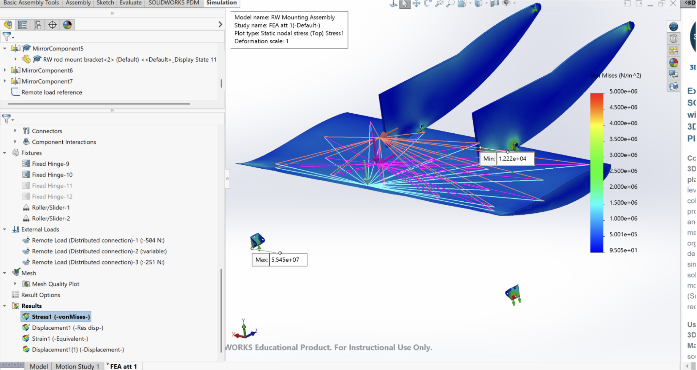
Iterations
Initially performed 4 rounds of topology analysis. As topology analysis is less accurate when removing higher percentages of material, I decided to perform many iterations of lower percentage cutouts. The following figure shows the first 5 part iterations, along with the percent mass reduction between each part.
Circular cutouts were preserved for the mounting points. New parts were made by creating a new sketch on top of a sketch of the previous topology iteration.
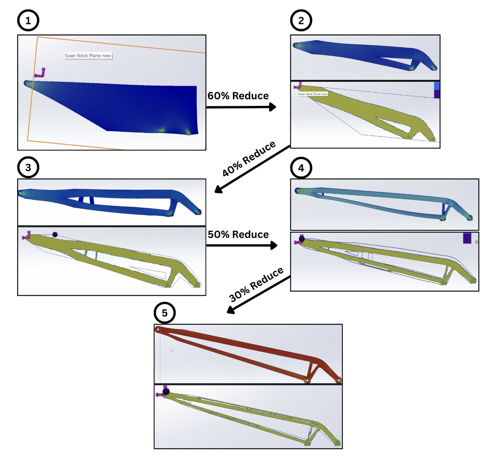
The topology began to mainly remove material from the inside of the upper bar (practically unmanufacturable) during the 4th reduction, meaning the current design is likely near the lowest feasible weight given the target FOS. No part-context FEA was run for the final part — instead an assembly FEA was run. This was after creating and adding a cross-member (and its mount points) to analyze its effects on the force tolerance.
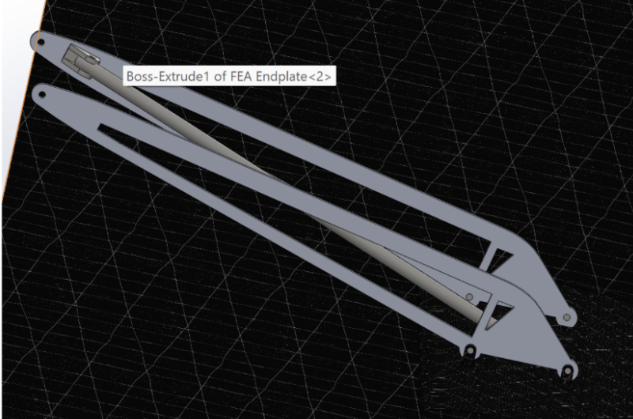
Analyzed both straight-line acceleration and acceleration while turning (2 G's applied to endplates) to account for worst-case loading.
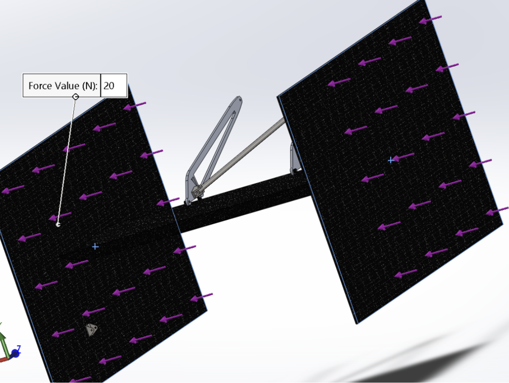
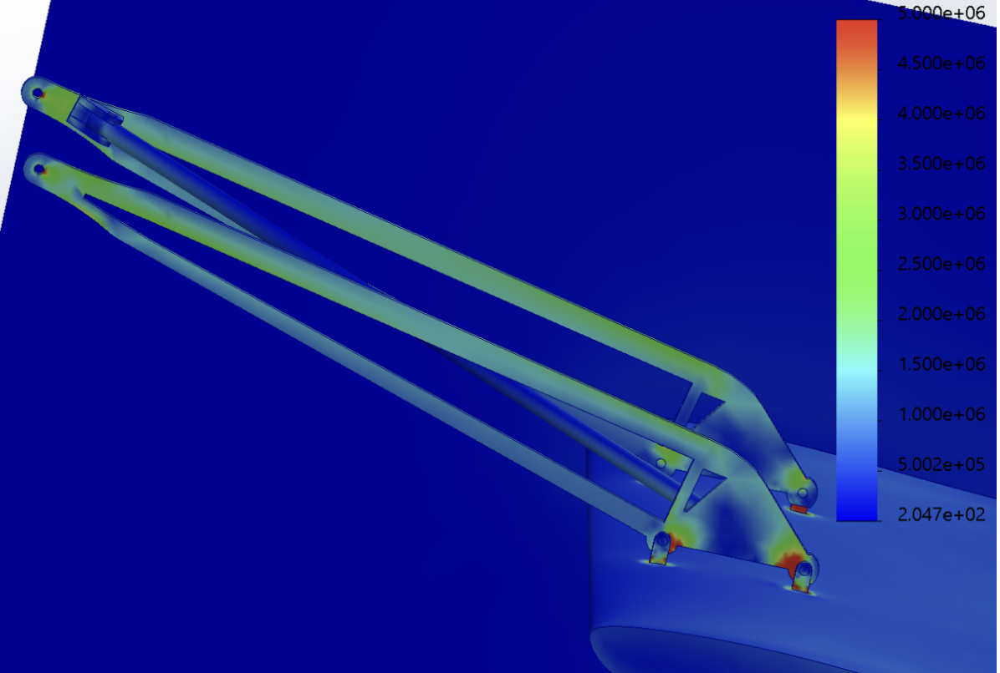
Part in assembly had a FOS of 4.1 for straight-line acceleration, and 3.7 for turning.
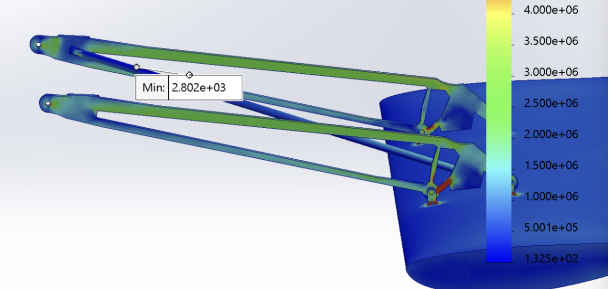
After smoothing the edges (to conform with safety standards), here is the initial final product.
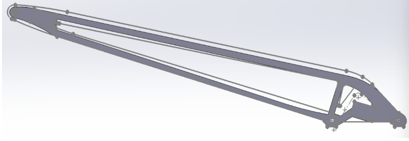
Unfortunately I forgot to delete some references to the rear wing, and when its profile was changed the swan-neck part broke. I was able to re-build the part (updated to the new wing profile) based on info in the broken file.
Fast forward to the final product! Smoothed out edges and added M6 holes where necessary.
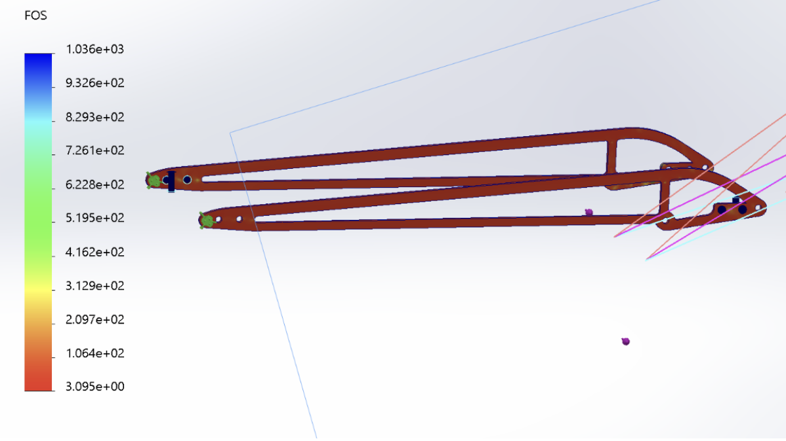
FOS of 3.1 under worst-case acceleration + turning forces. Mass is 182 grams, slightly better than last year. However, the previous part didn't account for turning G's or the cross-member, so the new part maintains the same FOS under significantly more strenuous loading conditions at the same weight!
The team and I then waterjetted the mounts. Shown below is my design (in hand) compared to last year's mount.
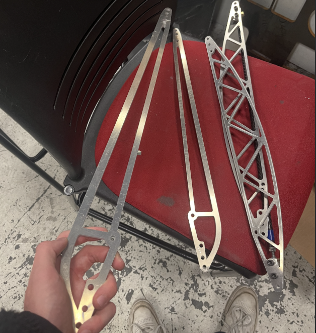
I then tested the part's resistance to turning forces using 0 (control), 5, and 10 lbs, and measured the deflection from resting state. 10 lbs (shown below) is ~45N (3 kg × 1.5 G's), whereas only 20N (assumed 2 kg rear-wing × 1 G) was used in the CAD FEA. As seen, the part holds up just fine even under these abnormal stresses!
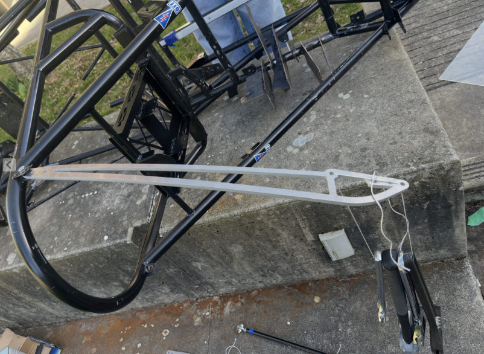
Results
- Achieved target FOS of 3.0 (actual: 3.1).
- Maintained the same weight as the previous year's swan-neck (182g vs 183g), while properly accounting for worst-case loading scenarios.
- Mount was successfully used in competition with no errors.
- Learned CAD part + assembly modelling, and FEA + topology analysis.
Slide from the official competition presentation:
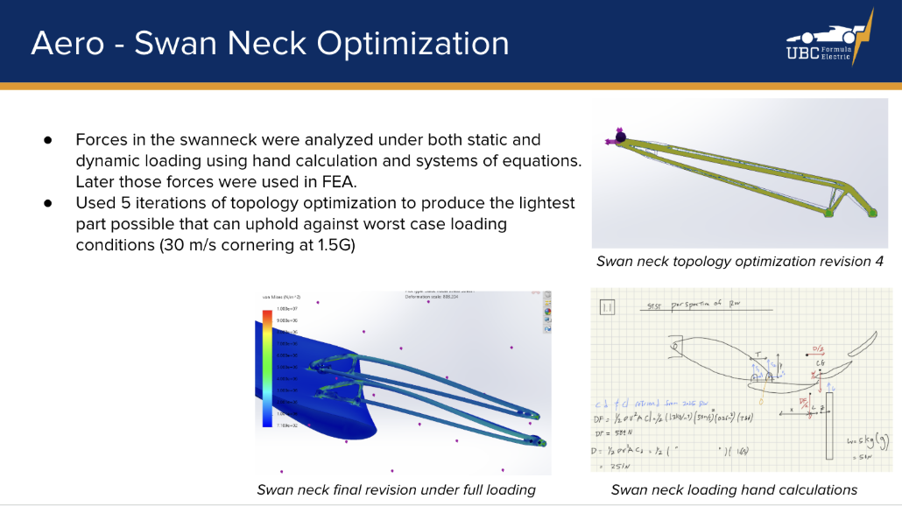